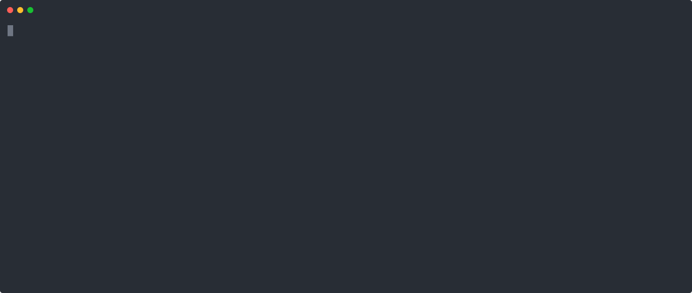
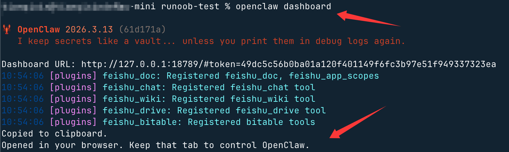
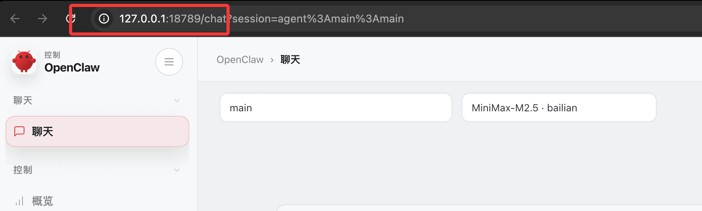
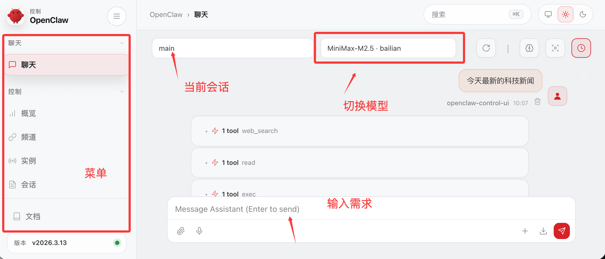
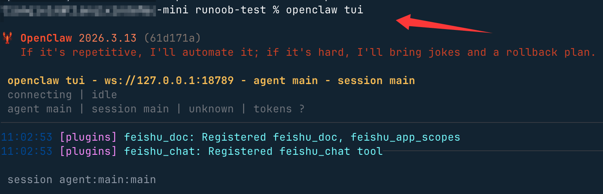
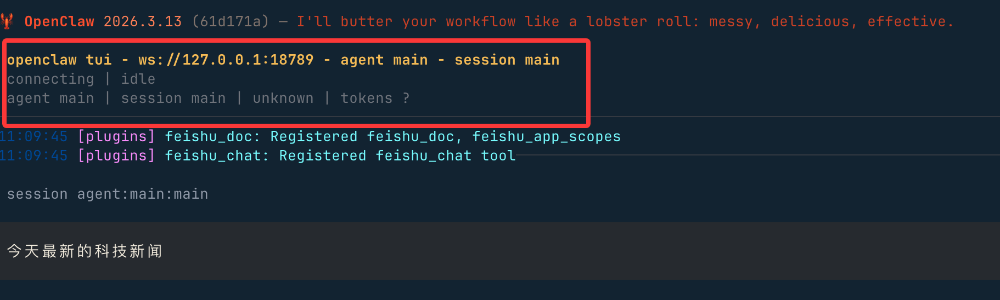
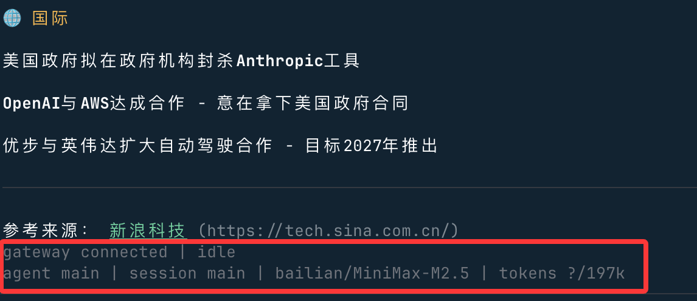
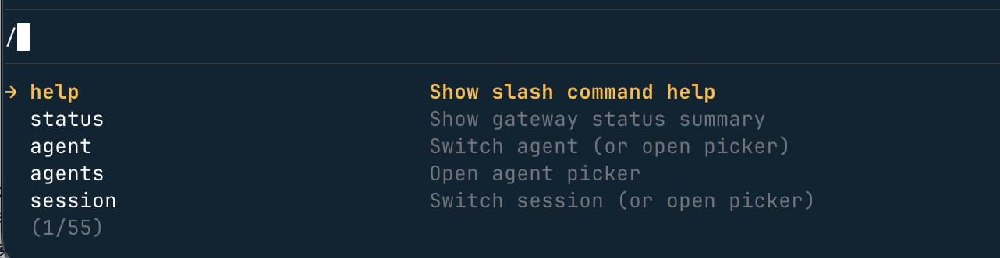

OpenClaw クイックスタート
以下のコマンドでワンクリックインストールできます。
macOS/Linux：
curl -fsSL https://openclaw.ai/install.sh | bash
Windows（PowerShell）：
iwr -useb https://openclaw.ai/install.ps1 | iex
起動ガイド
インストール完了後、Onboarding を実行して初期設定を完了します。これが最も重要なステップです：
openclaw onboard --install-daemon
初心者ガイドでは、認証、Gateway ゲートウェイ設定、オプションのチャネルを設定します。：
- 認証設定：Gateway Token または Password を設定し、API インターフェースを保護します
- モデルプロバイダー設定：LLM を選択して設定します（例：Anthropic API Key）
- チャネル設定（オプション）：Telegram Bot、WhatsApp などのチャットチャネルに接続します
- システムサービスのインストール：
--install-daemonパラメータで Gateway を自動起動に設定

Gateway 基本操作
Gateway は OpenClaw のコアプロセスであり、すべての機能はこれに依存して動作します：
# 查看 Gateway 状态 openclaw gateway status # 在前台运行（适合调试） openclaw gateway --port 18789 # 详细日志模式 openclaw gateway --port 18789 --verbose # 强制占用端口并启动（解决端口冲突） openclaw gateway --force # 重启 Gateway openclaw gateway restart # 停止 Gateway openclaw gateway stop # 查看实时日志 openclaw logs --follow
Control UI へのアクセス
Control UI は OpenClaw のビジュアル管理インターフェースです：
# 打开 Control UI（自动在浏览器中打开） openclaw dashboard

または直接アクセス： http://127.0.0.1:18789/。

Control UI の主な機能：
- チャットインターフェース：チャネルを一切設定する必要がなく、ブラウザで直接 AI と会話できます
- ステータス監視：Gateway のヘルスステータス、チャネル接続状況を確認します
- セッション管理：さまざまなチャネルの会話履歴を表示・管理します
次に、ページ上でチャットを開始できます：

🚀 最速体験パス
Control UI を開いたらすぐにチャットを開始できます——Channel の設定は一切不要です！これが OpenClaw が正常に動作することを最も速く確認する方法です。
主要コマンド早見表
| コマンド | 説明 |
|---|---|
openclaw doctor |
総合ヘルスチェックと設定問題の修復を試行 |
openclaw health |
クイックヘルスチェック |
openclaw status |
Gateway とチャネルの全体的な状態を確認 |
openclaw gateway status |
Gateway プロセスの状態を確認 |
openclaw gateway status --deep |
詳細ステータスチェック（RPC プローブを含む） |
openclaw gateway run |
フォアグラウンドで Gateway を実行 |
openclaw gateway start |
バックグラウンドで Gateway サービスを起動 |
openclaw gateway stop |
Gateway サービスを停止 |
openclaw gateway restart |
Gateway サービスを再起動 |
openclaw gateway probe |
Gateway の接続性と状態を検出 |
openclaw gateway discover |
ローカルネットワークまたはリモートの Gateway を検出 |
openclaw gateway call health |
Gateway ヘルスチェック API を呼び出し |
openclaw channels status --probe |
すべてのチャネルの接続状態をチェック |
openclaw dashboard |
ブラウザのコントロールパネルを開く |
openclaw logs --follow |
ログ出力をリアルタイムで追跡 |
openclaw onboard |
初期設定ウィザードを再実行 |
openclaw secrets reload |
Secrets 設定をホットリロード |
Gateway ホットリロード機構
OpenClaw は設定のホットリロードをサポートしており、デフォルトはhybridモード：
gateway.reload.mode |
動作の説明 |
|---|---|
off |
自動リロードなし、手動再起動が必要 |
hot |
安全な変更のみ適用（接続を中断しない） |
restart |
すべての変更で Gateway を再起動 |
hybrid（デフォルト） |
ホット適用できるものはホット適用し、再起動が必要なものは自動再起動 |
TUI：ターミナルチャットインターフェース
ブラウザの Control UI に加えて、OpenClaw は完全にターミナル内で動作するインタラクティブなインターフェースも提供しています——TUI（Terminal UI）、ブラウザ不要で、SSH でサーバーに接続しても直接チャットできます。
クイック起動
# 第一步：确保 Gateway 已运行 openclaw gateway # 第二步：打开 TUI openclaw tui

リモート Gateway に接続：
openclaw tui --url ws://<host>:<port> --token <gateway-token> # 如果 Gateway 使用密码鉴权 openclaw tui --url ws://<host>:<port> --password <password>
インターフェースレイアウト
TUI 起動後、4 つのエリアが表示されます：
| エリア | 内容 |
|---|---|
| Header（上部バー） | 接続 URL、現在の Agent、現在の Session |
| Chat log（メッセージエリア） | ユーザーメッセージ、AI 応答、システム通知、ツール呼び出しカード |
| Status line（ステータス行） | 接続 / 実行状態（connecting / running / streaming / idle / error） |
| Footer（下部バー） | 接続状態 + Agent + Session + モデル + Token 数 |
ヘッダー領域：

フッター領域：

キーボードショートカット
| ショートカット | 機能 |
|---|---|
Enter |
メッセージを送信 |
Esc |
現在の実行を中止 |
Ctrl+C |
入力をクリア（2 回押すと終了） |
Ctrl+D |
TUI を終了 |
Ctrl+L |
モデルセレクターを開く |
Ctrl+G |
Agent セレクターを開く |
Ctrl+P |
Session セレクターを開く |
Ctrl+O |
ツール出力の展開 / 折りたたみを切り替え |
Ctrl+T |
Thinking 表示を切り替え（履歴を再読み込みします） |
よく使うスラッシュコマンド
使用/コマンドを呼び出す：

よく使うコマンド：
/help # 查看帮助 /status # 查看连接状态 /agent <id> # 切换 Agent /session <key> # 切换 Session /model <provider/model> # 切换模型（如 /model anthropic/claude-sonnet-4-6） /think <off|minimal|low|medium|high> # 设置思考深度 /deliver <on|off> # 开启/关闭消息投递到 Provider /new # 重置当前 Session /abort # 中止当前运行 /exit # 退出 TUI
ローカル Shell コマンド
入力ボックスで!で始めると、ローカル shell コマンドを直接実行できます：
!ls -la # 列出当前目录 !cat log.txt # 查看文件内容
⚠️ TUI は各セッションで初めて
!を使用する際に承認確認を求め、拒否するとこのセッション内では!は使用できなくなります。
起動オプション
| パラメータ | 説明 | デフォルト値 |
|---|---|---|
--url <url> |
Gateway WebSocket アドレス | 設定から読み込むかws://127.0.0.1:<port> |
--token <token> |
Gateway Token 認証 | — |
--password <password> |
Gateway パスワード認証 | — |
--session <key> |
Session を指定 | main |
--deliver |
起動時にメッセージ配信を有効化 | デフォルトではオフ |
--thinking <level> |
思考レベルを上書き | — |
--history-limit <n> |
履歴の読み込み件数 | 200 |
--timeout-ms <ms> |
Agent タイムアウト時間 | agents.defaults.timeoutSeconds を読み取り |
関連コンテンツ
その他の関連コンテンツは以下のとおりです：
その他の拡張
クリックしてノートを共有
<p style="font-size:14px;">ノートは本記事の内容を拡張したものである必要があります！</p><br> <p style="font-size:12px;"><a href="../tougao.html" target="_blank">記事投稿はこちらをクリック</a></p> <p style="font-size:14px;"><a href="../w3cnote/runoob-user-test-intro.html" target="_blank">登録招待コードの取得方法</a></p> <h3 class="text-muted"><i class="fa fa-info-circle" aria-hidden="true"></i> ノートを共有する前に<a href=";.html" class="runoob-pop">ログイン</a>が必要です！</h3> <p><a href="../w3cnote/runoob-user-test-intro.html" target="_blank">登録招待コードの取得方法</a></p>